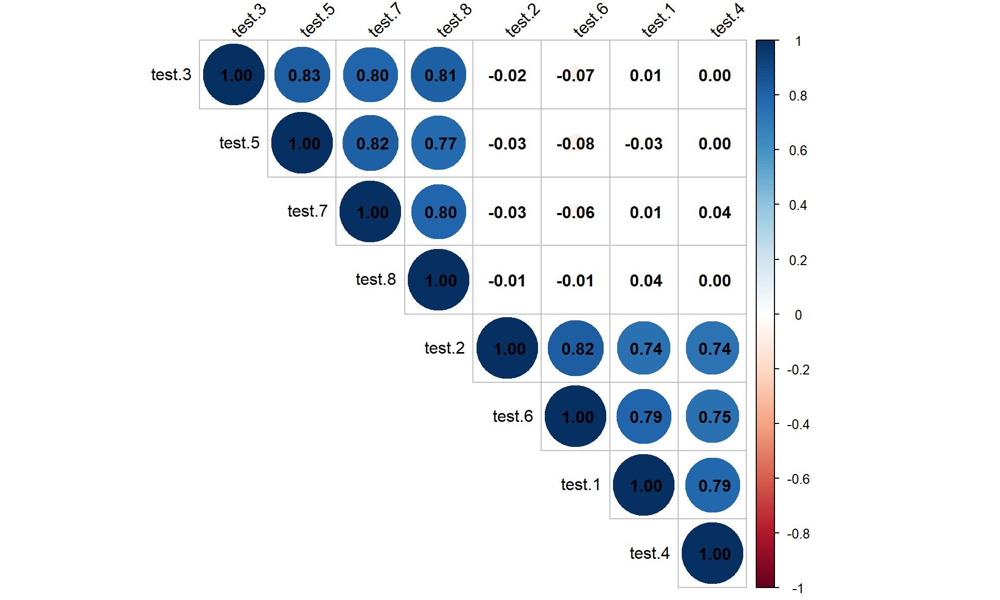
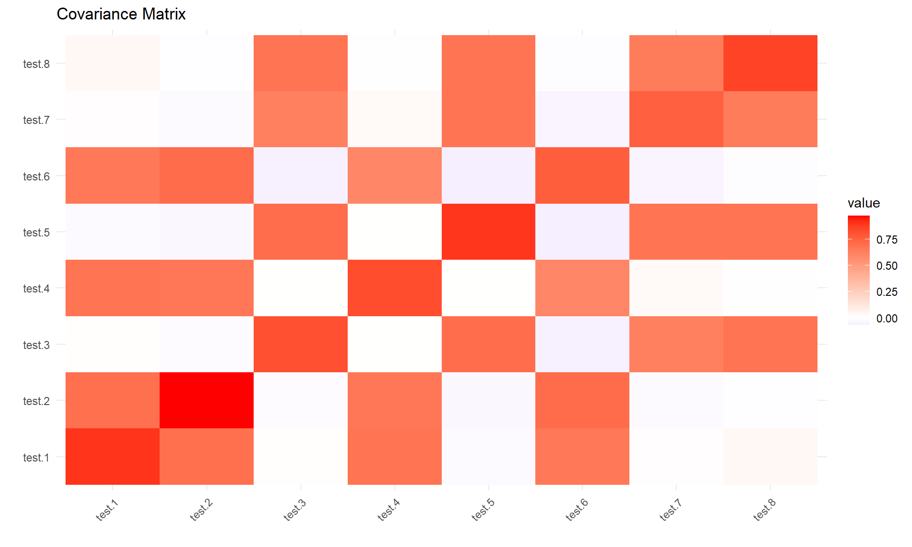
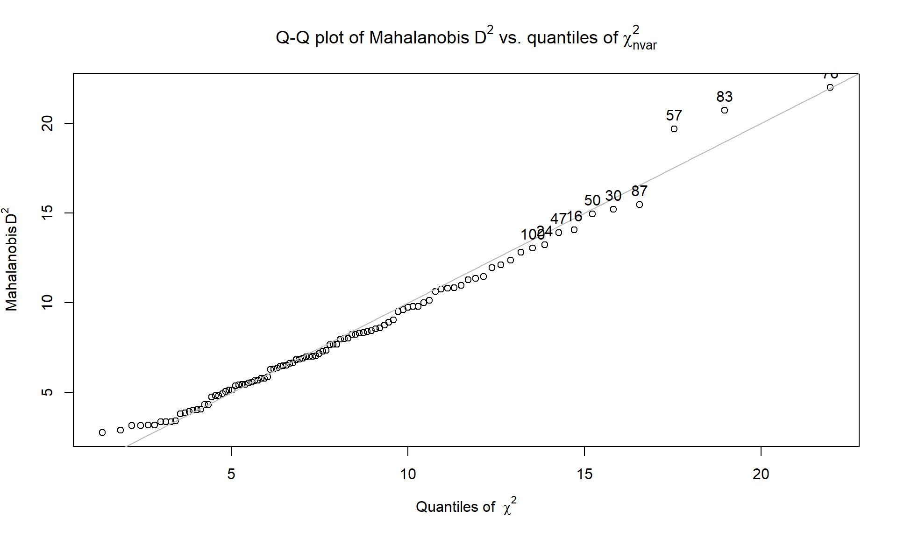
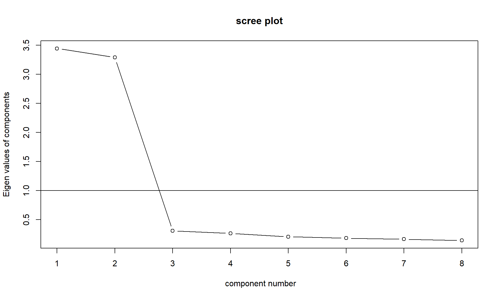
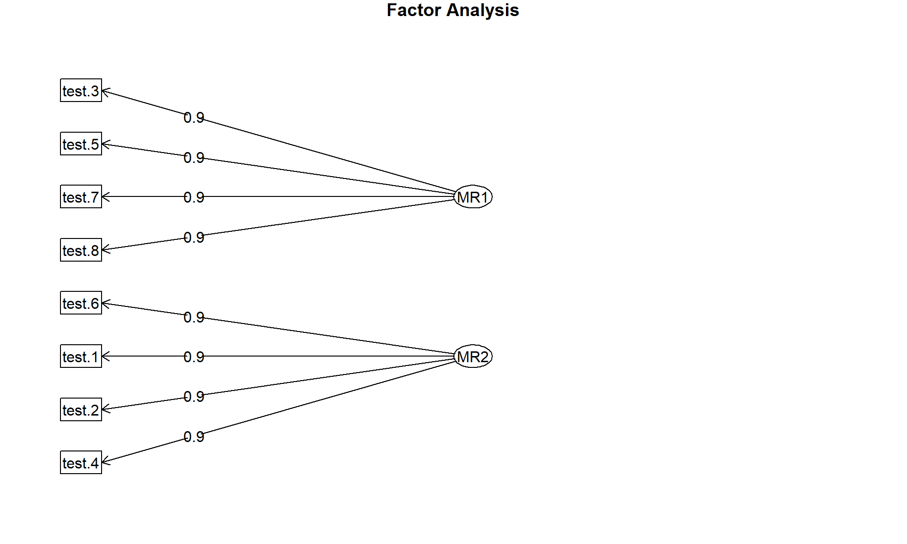
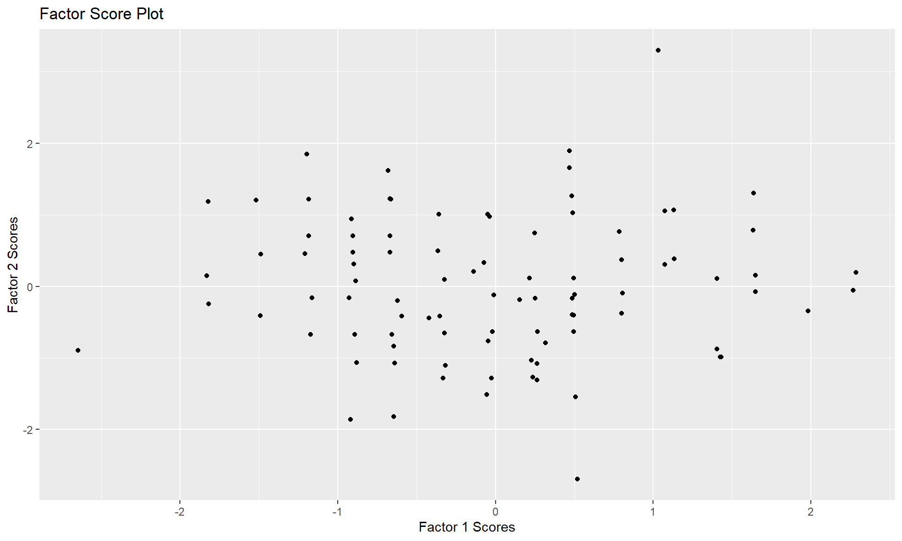
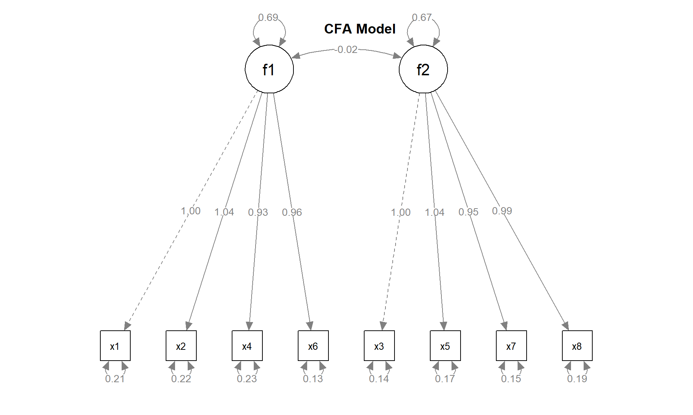

Factor Analysis
Introduction
Factor analysis (FA) assumes that there are a number of underlying (latent) factors affecting the observed scores on items/tests. In other words, the traits underlying a test might be multidimensional.
When a new measure is established, researchers often make assumptions about the traits that each item/subtest would measure. If the items are indeed loading on different factors in the same way as proposed, the test is said to have high factorial validity.
Factor analysis can be divided into two types:
- Exploratory factor analysis (EFA): method to explore the underlying structure of a set of observed variables, and is a crucial step in the scale development process. For example, how many factors are needed to sufficiently explain the observed score variance? Which is the relationship between each item and factor?
- Confirmatory factor analysis (CFA): method to verify a hypothesized factor structure. In CFA, theory specifies which factor(s) an item should load on. Other entries are restricted to 0. You want to see if the hypothesized model fits the data well.
Types of Factoring Methods
- Principal Component Analysis (PCA): Extracts maximum variance as the first factor, then continues sequentially for subsequent factors.
- Common Factor Analysis: Focuses on extracting common variance, excluding unique variances. Used in structural equation modeling (SEM).
- Image Factoring: Based on the correlation matrix and uses OLS regression to predict factors.
- Maximum Likelihood Method: Uses the maximum likelihood approach based on the correlation matrix.
- Other Methods: Includes Alfa factoring and weight square methods, which are regression-based.
Factor Loading: Represents the correlation between variables and factors, indicating how much variance in the variable is explained by the factor. A factor loading of 0.7 or higher is generally considered sufficient.
Eigenvalues: Indicate the variance explained by a factor out of the total variance. A common rule is to consider factors with eigenvalues greater than one.
Factor Score: A score for each observation that can be used in further analysis, assuming all variables will behave as these scores.
Criteria for determining the number of factors: According to the Kaiser Criterion, Eigenvalues is a good criteria for determining a factor. If Eigenvalues is greater than one, we should consider that a factor and if Eigenvalues is less than one, then we should not consider that a factor. According to the variance extraction rule, it should be more than 0.7. If variance is less than 0.7, then we should not consider that a factor.
Assumptions
- No outlier: Assume that there are no outliers in data.
- Adequate sample size: The case must be greater than the factor.
- No perfect multicollinearity: Factor analysis is an interdependency technique. There should not be perfect multicollinearity between the variables.
- Homoscedasticity: Since factor analysis is a linear function of measured variables, it does not require homoscedasticity between the variables.
- Linearity: Factor analysis is also based on linearity assumption. Non-linear variables can also be used. After transfer, however, it changes into linear variable.
- Interval Data: Interval data are assumed.
Exploratory Factor Analysis (EFA)
Assumes that any indicator or variable may be associated with any factor. This is the most common factor analysis used by researchers and it is not based on any prior theory.
R base Implementation
- If 2 items/tests have high observed-score correlations, they might
be related to (or loading on) some common factor. To get a general idea
about the correlation between items/subtests, we can use the cor
function in R to obtain a correlation matrix.
- The correlation matrix suggests that: tests 1, 2, 4, 6 are highly correlated, and tests 3, 5, 7, 8 are also highly correlated. The test correlations across these two groups are almost all zero. This suggests that there may be 2 underlying factors, tests 1, 2, 4, 6 may load on one, and tests 3, 5, 7, 8 may load on the other.
- EFA with 1 factor using the scores data. Here you assume there is
only one underlying factor.
- Loadings: You can see that some loadings are blank. In fact, loadings smaller than .1 in absolute value are omitted (so that a sparse structure is displayed more clearly). Tests 3,5,7,8 are the only ones with nontrivial loadings on the single factor.
- Looking at Proportion Var: About 40.2% variance in the data is explained by this single factor model.
- EFA with 2 factors
- With 2 factors, the proportion of explained variance (Cumulative var) increased to 78.9%.
- EFA with Covariance Matrix
- If the complete response data is not available, and we only have the covariance or correlation matrix containing the covariance/correlations between the indicators, we can still conduct factor analysis with this as the input.
- Factor scores
- The individual indicator/subtest scores would be the weighted sum of the factor scores, where the weights are the determined by factor loadings.
- Rotational Indeterminacy
- There exist infinitely many possible solutions to the EFA. This is called rotational indeterminacy. We can rotate the factors, so that the loadings will be as close as possible to a desired structure.
- There are two types of rotation methods:
- Orthogonal: The underlying factors after rotation will be uncorrelated.
- Oblique: The underlying factors after rotation can be correlated.
## Load Dataset
head(scores) %>%
kable(caption = "Check Data Structure", format = "html") %>%
kable_styling(latex_options = "striped")| test.1 | test.2 | test.3 | test.4 | test.5 | test.6 | test.7 | test.8 |
|---|---|---|---|---|---|---|---|
| 5 | 4 | 3 | 5 | 4 | 4 | 3 | 3 |
| 5 | 6 | 4 | 5 | 4 | 5 | 4 | 4 |
| 4 | 3 | 3 | 4 | 4 | 3 | 3 | 4 |
| 4 | 4 | 4 | 3 | 5 | 4 | 4 | 5 |
| 4 | 5 | 2 | 4 | 3 | 4 | 2 | 3 |
| 5 | 5 | 5 | 5 | 6 | 5 | 5 | 6 |
## Check Correlation
cor_subtests <- cor(scores)
round(cor_subtests, 2) %>%
kable(caption = "Check Data Correlation", format = "html") %>%
kable_styling(latex_options = "striped")| test.1 | test.2 | test.3 | test.4 | test.5 | test.6 | test.7 | test.8 | |
|---|---|---|---|---|---|---|---|---|
| test.1 | 1.00 | 0.74 | 0.01 | 0.79 | -0.03 | 0.79 | 0.01 | 0.04 |
| test.2 | 0.74 | 1.00 | -0.02 | 0.74 | -0.03 | 0.82 | -0.03 | -0.01 |
| test.3 | 0.01 | -0.02 | 1.00 | 0.00 | 0.83 | -0.07 | 0.80 | 0.81 |
| test.4 | 0.79 | 0.74 | 0.00 | 1.00 | 0.00 | 0.75 | 0.04 | 0.00 |
| test.5 | -0.03 | -0.03 | 0.83 | 0.00 | 1.00 | -0.08 | 0.82 | 0.77 |
| test.6 | 0.79 | 0.82 | -0.07 | 0.75 | -0.08 | 1.00 | -0.06 | -0.01 |
| test.7 | 0.01 | -0.03 | 0.80 | 0.04 | 0.82 | -0.06 | 1.00 | 0.80 |
| test.8 | 0.04 | -0.01 | 0.81 | 0.00 | 0.77 | -0.01 | 0.80 | 1.00 |
library("corrplot")
corrplot(cor_subtests, method = "circle", type = "upper", order = "hclust",
tl.col = "black", tl.srt = 45, addCoef.col = "black")
## Single Factor Analysis
efa_1 <- factanal(x = scores, factors = 1)
loadings <- efa_1$loadings # Factor loadings
loadings##
## Loadings:
## Factor1
## test.1
## test.2
## test.3 0.909
## test.4
## test.5 0.901
## test.6
## test.7 0.894
## test.8 0.880
##
## Factor1
## SS loadings 3.216
## Proportion Var 0.402as.numeric(loadings)## [1] 0.003100294 -0.028298495 0.908886177 0.006756035 0.901239123
## [6] -0.067765586 0.893647841 0.879585184sum(loadings^2) # SS Loadings## [1] 3.216031sum(loadings^2) / ncol(scores) # Proportion Var## [1] 0.4020039## EFA with 2 factors
factanal(x = scores, factors = 2)##
## Call:
## factanal(x = scores, factors = 2)
##
## Uniquenesses:
## test.1 test.2 test.3 test.4 test.5 test.6 test.7 test.8
## 0.230 0.227 0.174 0.279 0.187 0.166 0.201 0.226
##
## Loadings:
## Factor1 Factor2
## test.1 0.877
## test.2 0.879
## test.3 0.909
## test.4 0.849
## test.5 0.901
## test.6 0.910
## test.7 0.894
## test.8 0.879
##
## Factor1 Factor2
## SS loadings 3.217 3.092
## Proportion Var 0.402 0.387
## Cumulative Var 0.402 0.789
##
## Test of the hypothesis that 2 factors are sufficient.
## The chi square statistic is 15.18 on 13 degrees of freedom.
## The p-value is 0.296## EFA with Covariance Matrix
cov_mat <- cov(scores)
round(cov_mat, 2) %>%
kable(caption = "Covariance Matrix", format = "html") %>%
kable_styling(latex_options = "striped")| test.1 | test.2 | test.3 | test.4 | test.5 | test.6 | test.7 | test.8 | |
|---|---|---|---|---|---|---|---|---|
| test.1 | 0.90 | 0.70 | 0.01 | 0.68 | -0.02 | 0.66 | 0.01 | 0.04 |
| test.2 | 0.70 | 0.97 | -0.01 | 0.67 | -0.03 | 0.71 | -0.02 | -0.01 |
| test.3 | 0.01 | -0.01 | 0.82 | 0.00 | 0.71 | -0.06 | 0.63 | 0.68 |
| test.4 | 0.68 | 0.67 | 0.00 | 0.83 | 0.00 | 0.60 | 0.03 | 0.00 |
| test.5 | -0.02 | -0.03 | 0.71 | 0.00 | 0.90 | -0.07 | 0.67 | 0.68 |
| test.6 | 0.66 | 0.71 | -0.06 | 0.60 | -0.07 | 0.77 | -0.05 | -0.01 |
| test.7 | 0.01 | -0.02 | 0.63 | 0.03 | 0.67 | -0.05 | 0.76 | 0.64 |
| test.8 | 0.04 | -0.01 | 0.68 | 0.00 | 0.68 | -0.01 | 0.64 | 0.86 |
## Visualize the Covariance Matrix
library("reshape2")
cov_long <- melt(cov_mat)
ggplot(cov_long, aes(x=Var1, y=Var2, fill=value)) +
geom_tile() +
scale_fill_gradient2(low = "blue", high = "red", mid = "white", midpoint = 0) +
theme_minimal() +
theme(axis.text.x = element_text(angle = 45, hjust = 1)) +
labs(title = "Covariance Matrix", x = "", y = "")
## covmat = to notify that the input data is a covariance matrix.
## n.obs = which is the sample size you used for computing the covariance matrix
factanal(covmat = cov_mat,
factors = 2,
n.obs = nrow(scores))##
## Call:
## factanal(factors = 2, covmat = cov_mat, n.obs = nrow(scores))
##
## Uniquenesses:
## test.1 test.2 test.3 test.4 test.5 test.6 test.7 test.8
## 0.230 0.227 0.174 0.279 0.187 0.166 0.201 0.226
##
## Loadings:
## Factor1 Factor2
## test.1 0.877
## test.2 0.879
## test.3 0.909
## test.4 0.849
## test.5 0.901
## test.6 0.910
## test.7 0.894
## test.8 0.879
##
## Factor1 Factor2
## SS loadings 3.217 3.092
## Proportion Var 0.402 0.387
## Cumulative Var 0.402 0.789
##
## Test of the hypothesis that 2 factors are sufficient.
## The chi square statistic is 15.18 on 13 degrees of freedom.
## The p-value is 0.296## Factor scores
## The individual indicator/subtest scores would be the weighted sum of the factor scores, where the weights are the determined by factor loadings.
output <- factanal(x = scores,
factors = 2,
scores = "regression")
head(output$scores)## Factor1 Factor2
## 1 -0.88097000 0.03016465
## 2 -0.04549636 0.98800767
## 3 -0.62996212 -1.09674458
## 4 0.49201233 -0.61045599
## 5 -1.80701705 -0.21758291
## 6 1.63726192 0.79152799## Rotational Indeterminacy (varimax-Orthogonal rotation)
varimax <- factanal(scores,
factors = 2,
rotation="varimax",
scores="regression")
cor(varimax$scores)## Factor1 Factor2
## Factor1 1.000000000 -0.001527159
## Factor2 -0.001527159 1.000000000## Rotational Indeterminacy (varimax-oblique rotation)
promax <- factanal(scores,
factors = 2,
rotation = "promax",
scores = "regression")
cor(promax$scores)## Factor1 Factor2
## Factor1 1.00000000 0.01563374
## Factor2 0.01563374 1.00000000R psych Implementation
Check Data
library(psych)
## Look for outliers
outlier(scores, plot=T, bad=10, na.rm=T)
## 1 2 3 4 5 6 7 8
## 7.670126 7.311951 8.383881 3.366754 7.702182 6.285384 4.837326 6.652661
## 9 10 11 12 13 14 15 16
## 6.908216 5.068674 4.073068 8.759132 3.196744 3.865613 9.508442 14.060832
## 17 18 19 20 21 22 23 24
## 3.366754 4.323155 6.866936 2.911364 10.753836 6.311135 7.039912 13.228568
## 25 26 27 28 29 30 31 32
## 4.060566 3.157005 9.617554 3.157005 5.783499 15.205834 9.742606 10.828921
## 33 34 35 36 37 38 39 40
## 7.352785 8.245958 6.824665 5.651806 5.677648 5.463839 8.445588 7.169869
## 41 42 43 44 45 46 47 48
## 10.012411 5.371632 3.196744 4.837326 9.040271 6.364637 13.914572 8.546721
## 49 50 51 52 53 54 55 56
## 9.794546 14.942946 5.425011 8.589240 6.482226 5.862889 9.803588 3.815519
## 57 58 59 60 61 62 63 64
## 19.676705 4.755823 11.359367 12.370905 4.036386 3.947633 7.026140 12.818286
## 65 66 67 68 69 70 71 72
## 11.465034 2.773438 5.526775 3.366754 10.135226 8.327697 5.453490 8.912829
## 73 74 75 76 77 78 79 80
## 3.432884 10.628570 7.012493 22.004446 8.245958 11.285399 6.524658 4.323155
## 81 82 83 84 85 86 87 88
## 6.982696 4.920797 20.710815 8.037874 7.995510 6.478941 15.461273 8.310104
## 89 90 91 92 93 94 95 96
## 5.130685 5.793320 5.130685 12.120256 7.679872 6.611138 11.958340 10.978177
## 97 98 99 100
## 5.593896 10.821548 7.987800 13.048147## Scree plot
VSS.scree(scores)
Fit Model
An eigenvalue in the context of EFA represents the total variance explained by each factor. It is a measure of the factor’s overall contribution to explaining the variability in the data. An eigenvalue explains how much of the information (variation) in the original variables is captured by the factor. Factors with higher eigenvalues are considered more important because they explain a larger portion of the total variance in the dataset. A factor loading of 0.40 or higher was the significant criterion for item assignment.
output2 <- fa(scores, # input data
nfactors = 2, # number of factors
rotate = "varimax", # rotation
scores = "regression") # factor score estimation
output2$loadings # factor loadings##
## Loadings:
## MR1 MR2
## test.1 0.882
## test.2 0.872
## test.3 0.909
## test.4 0.854
## test.5 0.900
## test.6 0.907
## test.7 0.896
## test.8 0.879
##
## MR1 MR2
## SS loadings 3.217 3.093
## Proportion Var 0.402 0.387
## Cumulative Var 0.402 0.789output2$uniquenesses # uniqueness## test.1 test.2 test.3 test.4 test.5 test.6 test.7 test.8
## 0.2214045 0.2375525 0.1730854 0.2706205 0.1907075 0.1720624 0.1974814 0.2267084output2$communality # communality## test.1 test.2 test.3 test.4 test.5 test.6 test.7 test.8
## 0.7785955 0.7624475 0.8269146 0.7293795 0.8092925 0.8279376 0.8025186 0.7732916output2$uniquenesses + output2$communalities## test.1 test.2 test.3 test.4 test.5 test.6 test.7 test.8
## 1.0000000 1.0000000 1.0000000 0.9999999 1.0000000 0.9999999 1.0000000 1.0000000Visualize Results
To visualize the results of a factor analysis conducted with the fa() function from the psych package in R, you can use various approaches depending on what aspects of the results you’re interested in visualizing. Here are a few common methods:
- Scree Plot: Shows the eigenvalues of factors to help determine the number of factors to retain.
- Factor Score Plot: Plots the factor scores for each observation, usually for the first two factors. The Factor Score Plot visualizes how observations score on the first two factors, which can be useful for identifying patterns or clusters among observations.
## Scree Plot
fa.diagram(output2)
# Factor Score Plot (for the first two factors)
scores <- as.data.frame(output2$scores)
ggplot(scores, aes(x = MR1, y = MR2)) +
geom_point() +
labs(x = "Factor 1 Scores", y = "Factor 2 Scores", title = "Factor Score Plot")
Reliability Analysis
Internal consistency is a measure of how well the items within a scale correlate with each other, indicating the extent to which all the items measure the same concept. It’s a crucial aspect of scale reliability, ensuring that the scale consistently measures what it’s intended to across different items.
Two statistical methods will be used to calculate internal consistency:
Cronbach’s Alpha (α): It ranges from 0 to 1, with higher values indicating greater internal consistency. A Cronbach’s alpha of 0.7 or above is generally considered satisfactory, suggesting that the items on the scale are well-correlated and measure the same underlying construct.
McDonald’s Omega (ω): McDonald’s omega is another measure of internal consistency that, like Cronbach’s alpha, ranges from 0 to 1. Omega is sometimes preferred over alpha because it can provide a more accurate estimate of internal consistency, especially in cases where the assumptions of Cronbach’s alpha are not met. A value greater than 0.7 is also considered satisfactory for McDonald’s omega, indicating good internal consistency.
Confirmatory Factor Analysis (CFA)
Used to determine the factor and factor loading of measured variables, and to confirm what is expected on the basic or pre-established theory. CFA assumes that each factor is associated with a specified subset of measured variables. It commonly uses two approaches:
- The traditional method: Traditional factor method is based on principal factor analysis method rather than common factor analysis. Traditional method allows the researcher to know more about insight factor loading.
- The SEM approach: CFA is an alternative approach of factor analysis which can be done in SEM. In SEM, we will remove all straight arrows from the latent variable, and add only that arrow which has to observe the variable representing the covariance between every pair of latents. We will also leave the straight arrows error free and disturbance terms to their respective variables. If standardized error term in SEM is less than the absolute value two, then it is assumed good for that factor, and if it is more than two, it means that there is still some unexplained variance which can be explained by factor. Chi-square and a number of other goodness-of-fit indexes are used to test how well the model fits.
R lavaan Implementation
Fit Model
Fitting a CFA model in lavaan requires a special model syntax. Let’s say we fit a 2-factor CFA model where the first factor f1 is measured by x1, x2, x4, and x6. The second factor f2 is measured by x3, x5, x7, and x8.
if (!requireNamespace("lavaan", quietly = TRUE)) install.packages("lavaan")
library("lavaan")
names(scores_CFA) <- paste0("x", 1:8)
names(scores_CFA)## [1] "x1" "x2" "x3" "x4" "x5" "x6" "x7" "x8"model <- '
f1 =~ x1 + x2 + x4 + x6
f2 =~ x3 + x5 + x7 + x8
'
fit <- cfa(model = model, data = scores_CFA)
result <- summary(fit, fit.measures = TRUE) # fit.measures = TRUE to print additional fit indices
print(result)## lavaan 0.6-19 ended normally after 31 iterations
##
## Estimator ML
## Optimization method NLMINB
## Number of model parameters 17
##
## Number of observations 100
##
## Model Test User Model:
##
## Test statistic 18.461
## Degrees of freedom 19
## P-value (Chi-square) 0.492
##
## Model Test Baseline Model:
##
## Test statistic 710.828
## Degrees of freedom 28
## P-value 0.000
##
## User Model versus Baseline Model:
##
## Comparative Fit Index (CFI) 1.000
## Tucker-Lewis Index (TLI) 1.001
##
## Loglikelihood and Information Criteria:
##
## Loglikelihood user model (H0) -719.358
## Loglikelihood unrestricted model (H1) -710.128
##
## Akaike (AIC) 1472.717
## Bayesian (BIC) 1517.005
## Sample-size adjusted Bayesian (SABIC) 1463.314
##
## Root Mean Square Error of Approximation:
##
## RMSEA 0.000
## 90 Percent confidence interval - lower 0.000
## 90 Percent confidence interval - upper 0.085
## P-value H_0: RMSEA <= 0.050 0.743
## P-value H_0: RMSEA >= 0.080 0.068
##
## Standardized Root Mean Square Residual:
##
## SRMR 0.025
##
## Parameter Estimates:
##
## Standard errors Standard
## Information Expected
## Information saturated (h1) model Structured
##
## Latent Variables:
## Estimate Std.Err z-value P(>|z|)
## f1 =~
## x1 1.000
## x2 1.044 0.086 12.178 0.000
## x4 0.929 0.082 11.372 0.000
## x6 0.959 0.074 13.006 0.000
## f2 =~
## x3 1.000
## x5 1.039 0.074 14.113 0.000
## x7 0.947 0.068 13.833 0.000
## x8 0.993 0.074 13.334 0.000
##
## Covariances:
## Estimate Std.Err z-value P(>|z|)
## f1 ~~
## f2 -0.019 0.072 -0.261 0.794
##
## Variances:
## Estimate Std.Err z-value P(>|z|)
## .x1 0.208 0.039 5.336 0.000
## .x2 0.218 0.041 5.269 0.000
## .x4 0.230 0.040 5.733 0.000
## .x6 0.129 0.029 4.503 0.000
## .x3 0.141 0.029 4.928 0.000
## .x5 0.167 0.033 5.124 0.000
## .x7 0.151 0.029 5.288 0.000
## .x8 0.192 0.035 5.537 0.000
## f1 0.686 0.125 5.464 0.000
## f2 0.669 0.115 5.835 0.000## To extract parameter estimates (such as factor loadings, variances, covariances, etc.) from a lavaan model fit object in R, you can use the $ operator followed by pe or the parameterEstimates()
## result$pe
parameterEstimates(fit)Visualize Results
To visualize the results of a confirmatory factor analysis (CFA) performed with the lavaan package in R, you can create several types of plots, including path diagrams to show the relationships specified in the model, or plots to show the model fit. However, lavaan itself does not have built-in functions for plotting. Instead, you can use the semPlot package, which integrates well with lavaan and offers extensive capabilities for visualizing SEM models, including CFA.
if (!requireNamespace("semPlot", quietly = TRUE)) install.packages("semPlot")
library(semPlot)
# Plotting the CFA model
options(warn=-1)
semPaths(fit, whatLabels = "est", layout = "tree", edge.label.cex = 0.75, node.label.cex = 0.75)
options(warn=0)
# Adding a title separately
title("CFA Model")
Reference
A PRACTICAL INTRODUCTION TO FACTOR ANALYSIS: EXPLORATORY FACTOR ANALYSIS
R Programming for Psychometrics - Factor Analysis
Watkins, M. (2020). A Step-by-Step Guide to Exploratory Factor Analysis with R and RStudio (1st ed.). Routledge. https://doi.org/10.4324/9781003120001
Bryant, F. B., & Yarnold, P. R. (1995). Principal components analysis and exploratory and confirmatory factor analysis. In L. G. Grimm & P. R. Yarnold (Eds.), Reading and understanding multivariate analysis. Washington, DC: American Psychological Association.
Hatcher, L. (1994). A step-by-step approach to using the SAS system for factor analysis and structural equation modeling. Cary, NC: SAS Institute.
Session Info
## R version 4.4.2 (2024-10-31 ucrt)
## Platform: x86_64-w64-mingw32/x64
## Running under: Windows 10 x64 (build 19045)
##
## Matrix products: default
##
##
## locale:
## [1] LC_COLLATE=English_United States.1252
## [2] LC_CTYPE=English_United States.1252
## [3] LC_MONETARY=English_United States.1252
## [4] LC_NUMERIC=C
## [5] LC_TIME=English_United States.1252
## system code page: 65001
##
## time zone: Europe/Berlin
## tzcode source: internal
##
## attached base packages:
## [1] stats graphics grDevices utils datasets methods base
##
## other attached packages:
## [1] semPlot_1.1.6 lavaan_0.6-19 psych_2.4.6.26
## [4] reshape2_1.4.4 corrplot_0.95 clinUtils_0.2.0
## [7] htmltools_0.5.8.1 Hmisc_5.1-3 inTextSummaryTable_3.3.3
## [10] gtsummary_2.0.3 kableExtra_1.4.0 lubridate_1.9.3
## [13] forcats_1.0.0 stringr_1.5.1 dplyr_1.1.4
## [16] purrr_1.0.2 readr_2.1.5 tidyr_1.3.1
## [19] tibble_3.2.1 ggplot2_3.5.1 tidyverse_2.0.0
##
## loaded via a namespace (and not attached):
## [1] rstudioapi_0.17.1 jsonlite_1.8.9 magrittr_2.0.3
## [4] farver_2.1.2 nloptr_2.1.1 rmarkdown_2.28
## [7] ragg_1.3.3 vctrs_0.6.5 minqa_1.2.8
## [10] askpass_1.2.1 base64enc_0.1-3 haven_2.5.4
## [13] Formula_1.2-5 sass_0.4.9 bslib_0.8.0
## [16] htmlwidgets_1.6.4 plyr_1.8.9 cachem_1.1.0
## [19] uuid_1.2-1 igraph_2.1.1 lifecycle_1.0.4
## [22] pkgconfig_2.0.3 Matrix_1.7-1 R6_2.5.1
## [25] fastmap_1.2.0 digest_0.6.35 OpenMx_2.21.13
## [28] fdrtool_1.2.18 colorspace_2.1-1 textshaping_0.4.0
## [31] crosstalk_1.2.1 labeling_0.4.3 fansi_1.0.6
## [34] timechange_0.3.0 abind_1.4-8 compiler_4.4.2
## [37] fontquiver_0.2.1 withr_3.0.2 glasso_1.11
## [40] htmlTable_2.4.3 backports_1.5.0 carData_3.0-5
## [43] highr_0.11 MASS_7.3-61 openssl_2.2.2
## [46] corpcor_1.6.10 gtools_3.9.5 tools_4.4.2
## [49] pbivnorm_0.6.0 foreign_0.8-87 zip_2.3.1
## [52] nnet_7.3-19 glue_1.8.0 quadprog_1.5-8
## [55] nlme_3.1-166 lisrelToR_0.3 grid_4.4.2
## [58] checkmate_2.3.2 cluster_2.1.6 generics_0.1.3
## [61] gtable_0.3.6 tzdb_0.4.0 data.table_1.16.2
## [64] hms_1.1.3 xml2_1.3.6 utf8_1.2.4
## [67] sem_3.1-16 ggrepel_0.9.6 pillar_1.9.0
## [70] rockchalk_1.8.157 splines_4.4.2 lattice_0.22-6
## [73] kutils_1.73 tidyselect_1.2.1 fontLiberation_0.1.0
## [76] pbapply_1.7-2 knitr_1.48 fontBitstreamVera_0.1.1
## [79] gridExtra_2.3 svglite_2.1.3 stats4_4.4.2
## [82] xfun_0.48 qgraph_1.9.8 arm_1.14-4
## [85] DT_0.33 stringi_1.8.4 yaml_2.3.10
## [88] boot_1.3-31 evaluate_1.0.1 officer_0.6.7
## [91] mi_1.1 gdtools_0.4.0 cli_3.6.3
## [94] RcppParallel_5.1.9 rpart_4.1.23 xtable_1.8-4
## [97] systemfonts_1.1.0 munsell_0.5.1 jquerylib_0.1.4
## [100] Rcpp_1.0.13 coda_0.19-4.1 png_0.1-8
## [103] XML_3.99-0.17 parallel_4.4.2 jpeg_0.1-10
## [106] lme4_1.1-35.5 viridisLite_0.4.2 scales_1.3.0
## [109] openxlsx_4.2.7.1 flextable_0.9.7 rlang_1.1.4
## [112] cowplot_1.1.3 mnormt_2.1.1